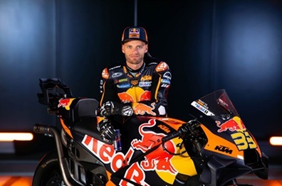

Brad Binder
Contenido multimedia

Acerca de Brad Binder
Brad Binder, el talentoso piloto sudafricano de MotoGP, ha dejado una huella notable en el mundo del motociclismo con su estilo agresivo y su inquebrantable determinación. Conocido por su habilidad para exprimir el máximo rendimiento de su moto en condiciones exigentes, Binder se ha consolidado como una de las figuras más destacadas de la parrilla.
Comenzó su trayectoria en categorías inferiores como Moto3 y Moto2, donde fue progresando paso a paso hasta alcanzar la categoría reina con el apoyo de estructuras ligadas al proyecto KTM. Su paso por equipos formativos le permitió acumular la experiencia competitiva necesaria para afrontar con éxito las exigencias del Mundial de MotoGP.
Es especialmente valorado por su estilo de pilotaje agresivo y por su capacidad para frenar tarde y gestionar la tracción en salidas de curva, cualidades que le permiten atacar en los tramos finales de las carreras y disputar posiciones delanteras. Estas características le han dado opciones de podio y victorias en distintas pruebas a lo largo de su carrera.
En la temporada 2024 completó la campaña con 217 puntos y la 5ª posición en la clasificación general, logrando además un podio. Para ampliar información y consultar registros detallados de resultados, utilice los enlaces a Wikipedia y al perfil en MotoGP que aparecen en esta misma página.
- Fecha de nacimiento: 11 de agosto de 1995
- Lugar de nacimiento: Potchefstroom, Sudáfrica
- Altura: 1,70 m
- Peso: 64 kg
- Moto: KTM RC16
- Dorsal: 33
Estadísticas
| Temporada | Puntos obtenidos | Clasificación final | Poles | Victorias | Podios |
|---|---|---|---|---|---|
| 2024 | 217 | 5º | 0 | 0 | 1 |
Equipos con los que ha competido
- RW Racing GP (125cc/Moto3)
- Ambrogio Racing (Moto3)
- Red Bull KTM Ajo (Moto3 y Moto2)
- Red Bull KTM Factory Racing (MotoGP)